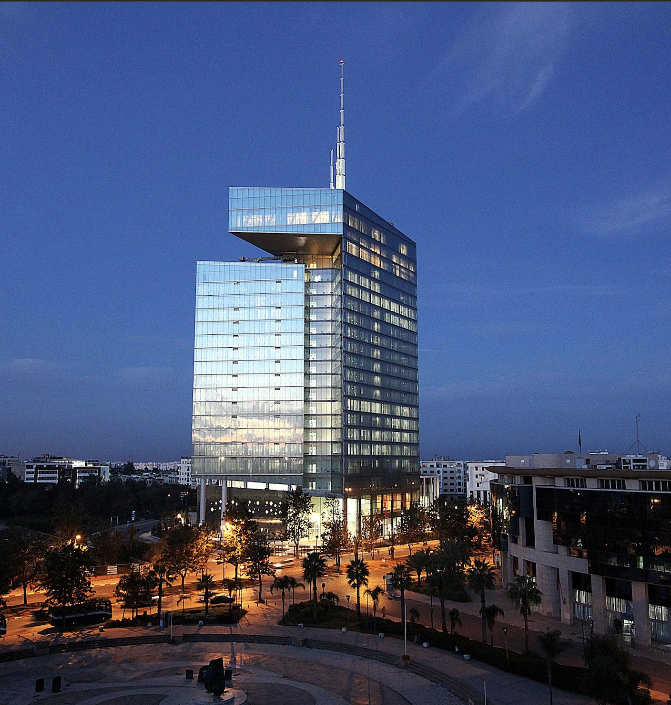

par Safiya TIFAOUI | 26 Septembre 2024 | 426 mots
Maroc Telecom, leader depuis 26 ans, continue d’avancer sur la bonne voie. Malgré quelques difficultés, l’entreprise parvient à redresser la situation et à maintenir sur le marché.
Itissalat Al Maghrib qui est sous le nom de Maroc Telecom qui est une société anonyme à Directoire et à Conseille de Surveillance. Fondée en 1990 après qui est eux l’officiel National des postes et Télécommunications, Maroc Telecom est le leader historique et est le premier opérateur situé au Maroc qui à plusieurs concurrents comme Inwi ou Orange. Son siège se situe à Rabat, l’entreprise à 2 organisation mère qui sont Emirates Télécommunications Corporation et Malitel.
L’entreprise joue un rôle essentiel dans la connectivité du pays e fournissant des services internet mais aussi plein d’autre services qui touches à la nouvelle technologie. Elle offre à ses clients et aux entreprises des services de haute qualité, en raison de son infrastructure de pointe, dans toutes les régions du Maroc.
En 2024 l’entreprise est dirigée par Abdeslam AHIZOUNE qui est âgé de 69 ans cette année. Le groupe Maroc Telecom est une entreprise publique content 9 013 salariés en 2023. Le chiffre d’affaires est de 3 350 millions d’euros en 2023 selon le rapport financier de Maroc Telecom, l’entreprise est connue à l’international.
Trois principaux opérateurs téléphoniques se partagent le marché marocain :

Après 26 ans, Maroc Telecom propose des services qui permet à ses clients de passer des appels téléphoniques en toute sécurité et tranquillité et bénéficier d’une connexion Wifi sans interruption, ce qui permet à leur client de vivre dans un environnement qui contribuent à leur bien-être général.
De plus, Maroc Telecom a fait un partenariat avec Kaspersky Lab qui est une société de sécurité informatique, et donc lancé deux nouvelles solutions de cybersécurité : Internet et Contrôle Parental. Ces services ont pour but de protéger les utilisateurs Marocains contre les dangers d’internet, tout en leur informant sur l’importance de la cybersécurité.
Maroc Telecom a un impact dans la modernisation du Maroc en investissant en grande quantités dans les infrastructures numériques. La société a mis en place la 4G dans tout le pays, ce qui a rendu l’accès à internet mobile plus facile pour de nombreux Marocains ce qui leur permettent de son implication en faveur développement de l’économie est important pour la croissance du pays, en particulier dans les zones rurales ou les services de télécommunications étaient restreints.
| Chiffre clée Maroc Telecom en millions et en 2023 | |
| Chiffre d'affaire net | 36 786 |
| Effectif | 9 013 |
| Invesstissement | 7 838 |